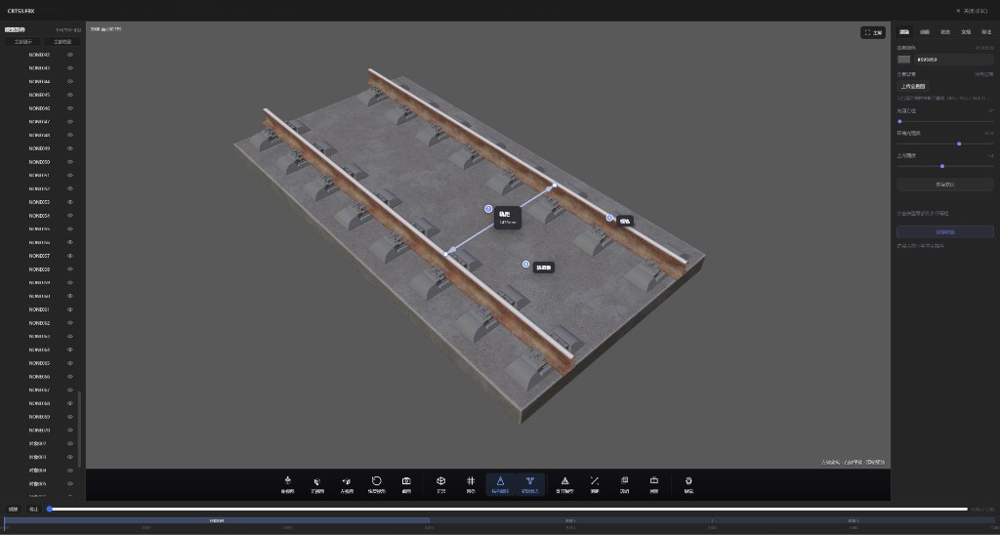

现实痛点
虚拟仿真投入高，却难用在日常课堂
- 院校已采购的虚拟仿真软件通常价格昂贵
- 内容固定，教师无法按校本课程二次开发
- 对电脑配置要求高，不便于日常备课与随堂演示
- 传统课件难以表达复杂装配关系与检修过程
Lightweight 3D Teaching System
集教学资源管理、三维模型交互预览、结构标注、部件动画与教学状态切换于一体。 支持本地文件夹与离线数据包双模式，让课堂示教更高效、更直观。

通过三维可视化展示，学员可以更快地理解结构组成、工作原理、拆解过程、检修维护要点，以及常见故障表现。
从资源浏览到三维交互，从标注讲解到状态切换，覆盖课前准备、课堂演示与内容分发的完整流程。
支持本地文件夹浏览与数据包模式。可安装、激活、导出 .3dam-pack 离线数据包，方便内容方统一分发教学资源。
双击模型进入全屏预览，支持旋转、缩放、平移。提供标准视角、炸开、测距、剖面、透明查看等专业示教工具。
支持标记点、箭头与图文标注，标注集合可独立管理。标注位置可拖动调整，适合讲解零部件结构与装配关系。
FBX 动画片段播放，部件多阶段关键帧动画编辑。教学状态可保存部件位姿、可见性与材质，课堂一键切换讲解步骤。
多材质槽位独立编辑，支持基础色与法线贴图。按 V 打开 UV 查看器，直观展示贴图布局与平铺效果。
数据包模型可关联 PDF 文档，预览时分屏显示三维模型与说明书。同时支持贴图、音频、视频等多媒体资产预览。
基于 Three.js 构建强大的模型加载与缩略图渲染能力，自动为模型生成 3D 预览缩略图。